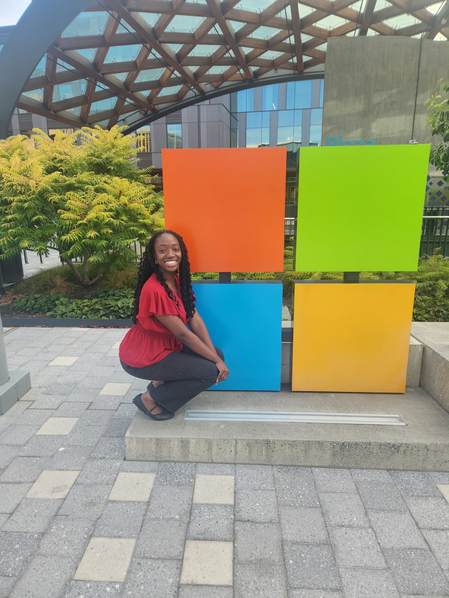

AI & Cognitive Design
CogniCount
I’m exploring how AI is changing the way we think, learn, and work, and how we can stay engaged with our own thinking while using it.
Hey, welcome to my page! I’m Naomi, a senior studying Computer Science and I’m excited about building interesting and innovative products.
So far, I’ve been a 3x intern at Microsoft and have had product management and software engineering internships throughout my college career. Through these experiences, I’ve realized that I really enjoy being involved in the process of figuring out what to build, why it matters, and how we can continuously improve it for users.

Your Picture HereCurrent side quests
I’m exploring how AI is changing the way we think, learn, and work, and how we can stay engaged with our own thinking while using it.
Making private equity more experiential by letting students navigate realistic investment decisions, competition, and tradeoffs.
Exploring an AI-assisted way to reuse application details across companies, review uncertain form fields, and track every application in one place.
Experience
Learning how to build and ship at scale.
Working alongside technical engineers and PMs across M365 gave me firsthand experience taking products from an idea through development and into a large, complex product ecosystem.
Seeing how technology, finance, and strategy come together.
Through trading simulations and strategic problem-solving, I got to explore how analytical thinking and business strategy shape decisions in financial products.
Learning to build for a problem that is still being defined.
I got to help develop a product centered around preserving human ability in an increasingly AI-driven world, while working with product and marketing to shape the launch, messaging, and features we brought to users.